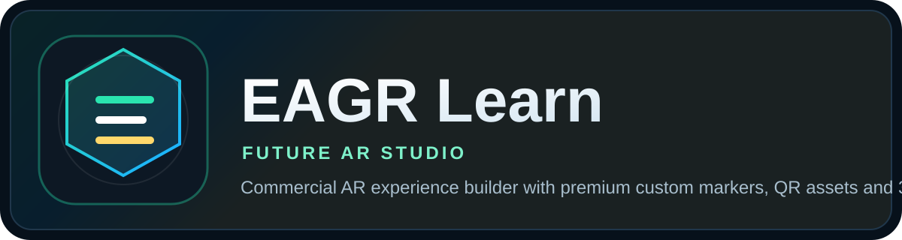
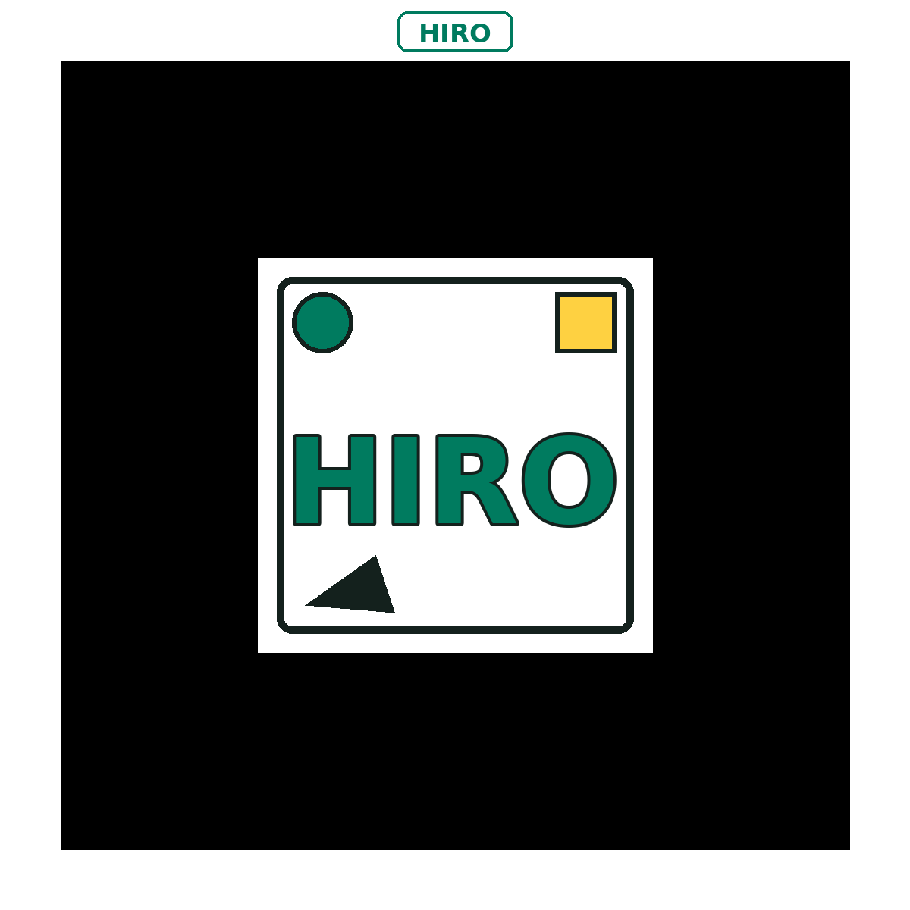

Soporte para modelos GLB/GLTF y modo WebXR Surface para experiencias markerless compatibles.
Commercial Edition

Immersive AR Experience Builder
EAGR Learn
Future AR Studio
Plataforma comercial con visuales futuristas para crear experiencias de Image, Video MP4/WebM, YouTube, PDF document y Web link. Incluye 3D visual mode, WebXR Surface Mode, soporte GLB/GLTF, premium QR styles, generación de Markers y exportación de recursos lista para compartir.
Escriba cualquier texto para el Marker. El sistema lo coloca automáticamente en la imagen del Marker.
Integrated Version y separada para una experiencia flexible.
Compatible con GitHub Pages, enlaces públicos y recursos web directos.
Smart Custom Marker
Escriba cualquier texto para su Marker o use WebXR Surface Mode para experiencias markerless con modelos 3D GLB/GLTF. El sistema mantiene un flujo fácil para QR, Marker AR y AR avanzada.
1. Build AR Experience
Construya una experiencia con una interfaz premium, tarjetas interactivas, visuales de futuro y workflow listo para negocio o educación.
WebXR Surface Mode es para modelos 3D en formato GLB/GLTF. Permite una experiencia markerless compatible con colocación en superficie en dispositivos soportados.Brand Settings + White Label
Personalice la experiencia con su marca. Puede subir un logo, usar logo por URL, guardar los ajustes automáticamente y activar modo white-label.
Use una URL pública a PNG, JPG, WEBP o SVG.
Use PNG, JPG, WEBP or SVG. El logo subido tiene prioridad sobre Logo URL.
Logo Preview
Functional Marker Mode
Se eliminaron las personalizaciones que impedían la detección. Esta versión usa el Marker HIRO estándar porque coincide exactamente con el archivo hiro-marker-generic.patt.
Escriba el texto que desee. El sistema sustituirá visualmente la palabra HIRO por este texto en el Marker.
Seleccione el color del texto visible del Marker.
Seleccione el estilo visual premium del Marker.
Live Marker Preview

Functional Marker Mode: use el Marker HIRO estándar para que la cámara lo detecte correctamente.
2. Export Experience Assets
El sistema crea dos versiones premium: Integrated y Separated. Si usa WebXR Surface Mode, el QR abrirá el visor markerless para modelos 3D GLB/GLTF.
Integrated Version
The integrated visual will appear here.
QR Code + selected Marker in one single visual asset.
Separated Version
The separated visual will appear here.
One visual with a simplified QR and a larger separated Marker.
Download Custom Marker Assets
Download the premium custom marker in PNG format and the optimized core pattern in PATT format. You can also personalize the text color and choose from multiple premium styles.
Premium Custom Marker
Escriba el texto que quiera en el campo Marker Text. Esta sección genera un marker más elegante, comercial y visualmente premium.
Advanced WebXR / GLB / GLTF Surface Placement
Esta edición añade un visor avanzado para modelos 3D en formato GLB o GLTF. En dispositivos compatibles, el usuario puede abrir el modelo en AR sin depender de un Marker, usando colocación sobre superficie.
WebXR Surface ModeMarkerless AR para modelos 3D compatibles.
GLB / GLTFFormato moderno para objetos 3D en web.
Fallback ModeSi WebXR no está disponible, se muestra un visor 3D interactivo.
Recommended Workflow
- Seleccione el Marker Type.
- Seleccione WebXR Surface Mode si trabajará con un modelo 3D GLB/GLTF.
- Genere los assets visuales y revise la vista previa.
- Publique la versión Integrated o Separated en su sitio, LMS o repositorio.
- El usuario escanea el QR y apunta al mismo Marker seleccionado.
El texto del Marker es totalmente personalizable. El sistema mantiene un patrón optimizado para que la detección AR siga siendo estable.